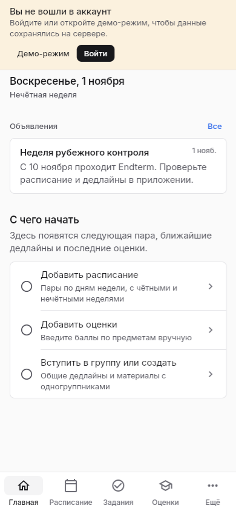

Главная (без входа) Расписание
Расписание| Название | StudyPlan — органайзер студента, который работает без интернета |
|---|---|
| Проблема | Расписание и домашка разбросаны по скриншотам и чатам, а в корпусе часто нет связи |
| Аудитория | Студенты колледжа Astana IT University и их группы |
| Заказчик | Учебная часть / студенческий совет (условно) |
| 3 ключевые функции | 1) расписание и задачи без интернета; 2) общие задания и материалы группы; 3) синхронизация между телефоном и ноутбуком |
| Границы | Не заменяет LMS вуза и мессенджеры. Нет чата, нет оплаты, нет журнала оценок преподавателя. |
| Сбор данных | Вариант (в): 3 интервью + 15 анкет (Google Forms) |

Главная (без входа)РасписаниеСтудентам трудно держать учёбу под контролем. Расписание меняется, зависит от недели (числитель или знаменатель) и хранится в виде таблицы или картинки в галерее.
Задания и сроки сдачи кидают в общий чат группы в Telegram или WhatsApp. Там они быстро уходят вверх под мемами и обсуждениями. Студент пропускает срок и получает долг.
Вторая проблема — связь. В аудиториях и на цокольном этаже мобильный интернет часто пропадает. Сайт вуза и LMS в этот момент не открываются, и даже номер кабинета узнать нельзя.
Старостам тоже тяжело: одни и те же вопросы про кабинет и неделю приходят в личку по много раз в день.
Как решают сейчас: делают скриншоты расписания, записывают задания в заметки телефона, закрепляют сообщения в чате. Всё это ручная работа, данные в разных местах, и легко запутаться.
| Группа | Интересы и ожидания | Влияние | Возможный конфликт |
|---|---|---|---|
| Студенты | Видеть пары и задачи без интернета, не путать недели, ничего не пропускать | Высокое — основные пользователи | Не хотят ставить ещё одно приложение вместо привычного мессенджера |
| Старосты | Один раз выложить задание для всей группы и меньше отвечать в личку | Высокое — от них зависит, будет ли группа пользоваться | Не хотят вести данные в двух местах (чат и приложение) |
| Преподаватели | Чтобы студенты приходили в нужный кабинет и сдавали вовремя | Среднее | Продолжат выкладывать всё в LMS, а не в приложение |
| Администрация колледжа | Порядок, защита данных студентов | Среднее | Вряд ли даст доступ к своим серверам и базе |
| Участник | Формат, дата | Главное из ответов |
|---|---|---|
| И-1, Адильжан, студент | Переписка в Telegram, __.__.2026 | «В цоколе сеть не ловит. Если с вечера не сделал скриншот расписания — стоишь и ищешь, где пара». «Домашку скидывают в чат, через полчаса там 500 сообщений с мемами, потом листаешь полдня или пропускаешь срок». |
| И-2, Гани, студент | Лично, __.__.2026 | «Надоело по 10 раз за день писать номер кабинета и какая неделя. Нужна кнопка, чтобы задание сразу падало всей группе». |
| И-3, Альтаир, студент | Лично, __.__.2026 | «На парах сижу с ноутбуком на Windows, пишу код. Надо, чтобы всё открывалось с компа без сети». |
Форма: Google Forms, ссылка: ____________. Сроки: __.__–__.__.2026. Экспорт ответов (CSV без имён) — в приложении.
Ячейки с жёлтым фоном заполняются по реальному экспорту формы. Сумма в каждой таблице должна быть 15.
| Таблица 1. Пропадает ли интернет в корпусе (в.4) | ||
|---|---|---|
| Ответ | Кол-во | % |
| Часто | ||
| Редко | ||
| Никогда | ||
| Таблица 2. Терялись ли задания в чате (в.5) | ||
|---|---|---|
| Ответ | Кол-во | % |
| Регулярно | ||
| 1–2 раза | ||
| Никогда | ||
| Таблица 3. Где хранят расписание (в.3) | ||
|---|---|---|
| Ответ | Кол-во | % |
| Скриншот | ||
| Чат | ||
| Бумага | ||
| Таблица 4. Главное устройство на парах (в.11) | ||
|---|---|---|
| Ответ | Кол-во | % |
| Android | ||
| iPhone | ||
| Ноутбук | ||
Диаграммы: по таблицам 1–4 построить столбчатые диаграммы прямо в Google Forms («Сводка») и вставить скриншоты.
| № | Потребность | Источник | Приоритет |
|---|---|---|---|
| П1 | Смотреть пары и кабинеты без интернета | И-1, анкета в.4, в.10 | Обязательно |
| П2 | Сохранять задачи на устройстве и обновлять, когда есть сеть | И-1, анкета в.5 | Обязательно |
| П3 | Не путать числитель и знаменатель | И-2, анкета в.6 | Обязательно |
| П4 | Одно задание сразу для всей группы | И-2 | Обязательно |
| П5 | Работать с ноутбука на Windows | И-3, анкета в.11 | Обязательно |
| П6 | Хранить методички рядом с группой и задачей | Анкета в.7, в.8 | Следует сделать |
| П7 | Видеть, сохранено ли всё на сервере (статус сети) | И-1 | Следует сделать |
| П8 | Отдельные объявления без флуда | Анкета в.9 | Можно сделать |
| Шаг | Участник | Вход | Результат | Проблема |
|---|---|---|---|---|
| 1 | Староста | PDF / слова преподавателя | Знает об изменении | Информация только у одного человека |
| 2 | Староста | Таблица расписания | Нужная строка | Ошибка с неделей |
| 3 | Староста | Скриншот | Сообщение в чате | Ручная работа |
| 4 | Группа | Сообщение | — | Теряется среди флуда |
| 5 | Преподаватель | Файл методички | Файл у старосты | Ещё одна пересылка |
| 6 | Студенты | Текст задания | Заметки у каждого свои | Нет общего списка |
| 7 | Студент | Нет сети | Нет данных | Портал без сети не работает |
| 8 | Студент | Забытый срок | Долг | Нет напоминания |
| Критерий | LMS вуза (Moodle) | Notion | StudyPlan (план) |
|---|---|---|---|
| Работа без интернета | Нет | Частично, часто не грузится | Да, всё на устройстве |
| Задание сразу всей группе | Только преподаватель | Нужно настраивать общий доступ | Галочка «Для группы» |
| Числитель/знаменатель | Нет | Вручную, формулами | Сам считает неделю |
| Платформы | Браузер, приложение | Все | Android, iOS, Windows, Web |
| Первый запуск | Вход через учётку вуза | Долгая настройка с нуля | Можно сразу, без регистрации |
| Трафик | Тяжёлые страницы | Много лишнего | Только изменения |
Какое подтверждение показывает, что проблема существует? Три интервью независимо описывают одно и то же: нет сети в корпусе и задания теряются в чате. Анкета это подтверждает в цифрах (таблицы 1 и 2). Ещё одно подтверждение — то, что студенты уже сами придумывают обходные пути: скриншоты расписания и закреплённые сообщения.